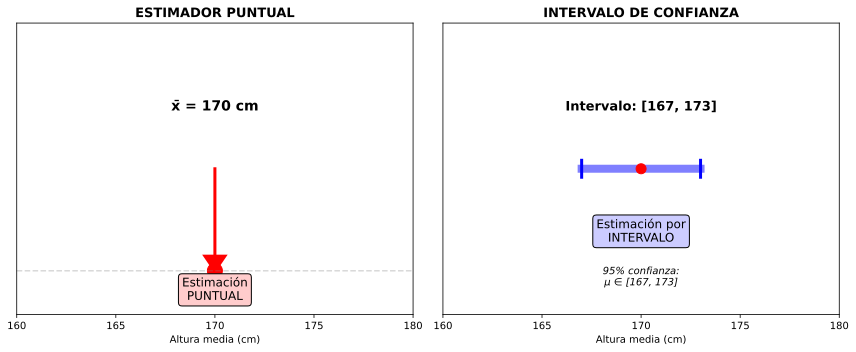

| Estimación Puntual | Estimación por Intervalo |
|---|---|
| Valor único: x̄ = 170 cm | Rango: [167, 173] cm |
| Precisa pero incierta | Menos precisa pero con confianza |
| No indica fiabilidad | Incluye nivel de confianza |

| Nivel Confianza | α | α/2 | z_{α/2} |
|---|---|---|---|
| 90% | 0.10 | 0.05 | 1.645 |
| 95% | 0.05 | 0.025 | 1.96 |
| 99% | 0.01 | 0.005 | 2.576 |
Ej 1: Muestra de 40 alturas: x̄ = 172 cm. Se sabe que σ = 10 cm. Calcular IC al 95%.
Datos:
Error estándar:
Margen de error:
Intervalo de confianza:
Interpretación correcta:
✗ Interpretación INCORRECTA:
Ej 2: Con los mismos datos, ¿cómo cambiaría el IC si usáramos confianza del 99%?
Datos:
Nuevo margen de error:
Nuevo IC:
Comparación:
| Confianza | IC | Amplitud |
|---|---|---|
| 95% | [168.9, 175.1] | 6.2 cm |
| 99% | [167.9, 176.1] | 8.2 cm |
Conclusión: Mayor confianza → Intervalo más amplio. Es el precio de estar más seguros.
Ej 3 (Contexto Vigo): Encuesta a 100 usuarios de Vitrasa. Tiempo medio espera: x̄ = 8.5 min, σ = 3 min. IC al 90%.
Datos:
Error estándar:
Margen de error:
IC:
Conclusión práctica: Con 90% de confianza, el tiempo medio de espera en paradas de Vitrasa está entre 8 y 9 minutos aproximadamente.
Ej 4: Queremos IC con amplitud máxima de 2 cm (±1 cm). Si σ = 10 cm y confianza 95%, ¿qué tamaño de muestra necesitamos?
Requisito: E = 1 cm (margen de error)
Fórmula del tamaño muestral:
Sustitución:
Redondeo:
Conclusión: Necesitamos casi 400 personas para lograr esa precisión. Mucha precisión requiere muestras grandes (y caras).